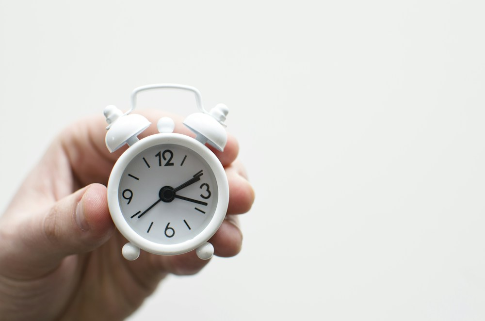

💪 Sức khỏe Nam giới
Relationship — Desire DiscrepancyDeep dive⏱ 8 phút đọc
Hóa Giải Sự Lệch Pha Ham Muốn: Hiểu Về Ham Muốn Tự Phát (Spontaneous) So Với Đáp Ứng (Responsive)
'Anh ấy lúc nào cũng muốn, còn cô ấy thì dường như chẳng bao giờ nghĩ tới.' Sự lệch pha về nhu cầu tình dục (Desire Discrepancy) là nguyên nhân hàng đầu dẫn đến cảm giác bị từ chối, ấm ức và đóng băng phòng the trong các cuộc hôn nhân. Nghiên cứu kinh điển của Tiến sĩ Rosemary Basson trên tạp chí The Lancet đã làm sáng tỏ: Sự khác biệt này không phải do một người 'yếu' hay 'thiếu tình yêu', mà do hai kiểu cơ chế sinh học kích hoạt ham muốn hoàn toàn khác nhau.
Nguồn nghiên cứu & Thiết bị: The Lancet & Journal of Sex & Marital Therapy•Màn hình App: Sexual Desire Dynamics & Intimacy Screen•Chỉ số: Spontaneous vs Responsive Desire, Basson Model & Erotic Context
💡Điểm Cốt Lõi & Hành Động Thực Tế
Có hai cơ chế ham muốn sinh học: Ham muốn Tự phát (Spontaneous - bỗng dưng thèm muốn từ hư không, phổ biến ở nam giới) và Ham muốn Đáp ứng (Responsive - chỉ xuất hiện sau khi có sự kích thích thể chất và bối cảnh thư giãn an toàn, gặp ở đa số phụ nữ và nhiều nam giới). Hiểu rằng 'sự sẵn lòng thử' (Willingness) khác với 'sự thèm khát sẵn' là chìa khóa phá vỡ vòng lặp bế tắc.
Hai Kiểu Hình Ham Muốn: Tự Phát So Với Đáp Ứng
Trong quan niệm truyền thống (theo mô hình của Masters & Johnson), tình dục được coi là một đường thẳng tuyến tính: Ham muốn → Kích thích hưng phấn → Cực khoái → Thỏa mãn.
Nếu bạn áp dụng mô hình này, bạn sẽ mặc định rằng: một người phải "thèm muốn trong đầu" trước thì mới bắt đầu quan hệ.
Tuy nhiên, công trình đột phá của Tiến sĩ Rosemary Basson (The Lancet, 2001) đã chứng minh sự tồn tại của hai cơ chế kích hoạt ham muốn hoàn toàn khác nhau:
Ham Muốn Tự Phát (Spontaneous Desire):
- Giống như cơn đói bụng bất chợt giữa buổi chiều: Bạn đang lái xe, làm việc và bỗng nhiên xuất hiện suy nghĩ khao khát tình dục trong đầu mà không cần tác nhân kích thích nào.
- Thường phổ biến hơn ở nam giới trẻ tuổi do nồng độ testosterone tự do và dopamine cao hơn.
Ham Muốn Đáp Ứng (Responsive Desire):
- Giống như việc bạn không hề cảm thấy đói bụng, nhưng khi bước vào một nhà hàng ấm cúng, ngửi thấy mùi thơm thức ăn và nếm thử một miếng khai vị ngon lành, bạn bỗng nhiên cảm thấy thèm ăn vô cùng!
- Người có ham muốn đáp ứng không tự nhiên nghĩ đến tình dục trong lúc đang bận rộn với công việc, con cái hay việc nhà. Nhưng nếu có một bối cảnh an toàn, một màn dạo đầu nhẹ nhàng không áp lực và những cái chạm âu yếm, cơ thể họ sẽ phản ứng và ham muốn thực sự sẽ bùng cháy SAU KHI sự kích thích đã bắt đầu!
Nghiên cứu từ Tiến sĩ Emily Nagoski cho thấy: Khoảng 15% nam giới và 30% phụ nữ có ham muốn chủ yếu là Đáp Ứng; trong khi đa số mọi người là sự pha trộn linh hoạt của cả hai tùy theo độ tuổi và mức độ căng thẳng.

📊 Vòng Tròn Phản Ứng Tình Dục Basson: Điểm khởi đầu không phải là ham muốn tự phát, mà là sự cởi mở sẵn lòng (Willingness); từ sự gần gũi cảm xúc dẫn tới kích thích sinh lý, và lúc này ham muốn mới thực sự được đánh thức. Nguồn sơ đồ: Wikimedia Commons ↗
Khi hai người không hiểu về hai kiểu ham muốn này, họ sẽ rơi vào cái bẫy tâm lý kinh điển làm đóng băng phòng the:
1. Người có ham muốn tự phát (thường là người chồng): Bắt đầu cảm thấy bị bỏ rơi, nghi ngờ sự quyến rũ của mình và liên tục đòi hỏi, gạ gẫm hoặc phàn nàn.
2. Người có ham muốn đáp ứng (thường là người vợ): Cảm thấy tình dục biến thành một "nghĩa vụ phải trả bài", cảm nhận áp lực ngột ngạt → Chân phanh thần kinh (SIS) bị đạp kịch sàn → Cô ấy né tránh mọi cử chỉ âu yếm nhỏ nhất vì sợ rằng "nếu mình ôm anh ấy, anh ấy sẽ tưởng mình muốn làm chuyện đó".
3. Kết quả: Sự đụng chạm thể xác hoàn toàn biến mất trong ngôi nhà; sự oán hận và cô đơn tích tụ theo năm tháng.
Bảng So Sánh Hai Kiểu Hình & Cách Ứng Xử Tương Ứng
Tiêu Chí So Sánh
Ham Muốn Tự Phát (Spontaneous)
Ham Muốn Đáp Ứng (Responsive)
Cảm Giác Khởi Đầu
Cơn rạo rực xuất hiện bất chợt từ hư không; chủ động khởi xướng thường xuyên.
Khởi đầu ở trạng thái trung tính (Neutral); không thèm muốn nhưng sẵn sàng đón nhận nếu thấy thoải mái.
Yếu Tố Quyết Định
Nồng độ Dopamine và Testosterone cao; kích thích thị giác trực tiếp.
Bối cảnh an toàn (Context): Không gian yên tĩnh, không bị con cái quấy rầy, cơ thể không bị mệt mỏi.
Trải Nghiệm Khoái Cảm
Tận hưởng từ giây phút đầu tiên.
Cần 15–20 phút thư giãn và vuốt ve chậm rãi để cơ thể "bắt nhịp" và thăng hoa mãnh liệt.
Thông Điệp Cần Hiểu
"Việc đối tác không tự nhiên thèm muốn KHÔNG có nghĩa là họ hết yêu bạn hoặc không thấy bạn hấp dẫn."
"Bạn không cần phải đợi đến khi cảm thấy 'thèm muốn cực độ' mới bắt đầu; hãy cho phép bản thân thử bước vào màn dạo đầu nhẹ nhàng."
Giao Thức 4 Bước Hóa Giải Bế Tắc Phòng The
Tách Rời Sự Thân Mật Thể Xác Khỏi Áp Lực Quan Hệ (Decouple Touch from Sex): Thiết lập một quy tắc ngầm: Nắm tay, hôn môi, massage lưng hay ôm ấp hoàn toàn không đồng nghĩa với việc bắt buộc phải quan hệ tình dục. Khi áp lực được gỡ bỏ, người có ham muốn đáp ứng sẽ thoải mái mở lòng đón nhận các cử chỉ âu yếm mỗi ngày.
Tập Trung Vào "Bối Cảnh" Trước Khi Chạm Vào Cơ Thể: Đối với ham muốn đáp ứng, màn dạo đầu thực sự bắt đầu từ 10 tiếng trước đó: Giúp đỡ việc nhà, gửi một tin nhắn dịu dàng giữa ngày, chuẩn bị bữa tối và tạo ra một không gian phòng ngủ sạch sẽ, thơm tho, khóa cửa an toàn.
Thực Hành "Khái Niệm Sẵn Lòng" (Willingness to Explore): Thay vì hỏi "Em/anh có hứng không?", hãy hỏi: "Em/anh có sẵn lòng dành 10 phút âu yếm thư giãn cùng anh/em không? Nếu sau 10 phút cơ thể em không muốn tiếp tục, tụi mình sẽ dừng lại ngay lập tức và chỉ ôm nhau ngủ". Thỏa thuận an toàn này giải phóng 100% sự ức chế tâm lý.
Lên Lịch Hẹn Hò Tình Dục (Scheduled Intimacy): Nhiều người chê cười việc "lên lịch làm tình" vì cho rằng nó làm mất đi tính lãng mạn tự nhiên. Nhưng đối với các cặp đôi bận rộn, việc cố định một buổi tối trong tuần để cùng nhau chuẩn bị tâm lý, tắm rửa và mong đợi là phương pháp hiệu quả nhất được các nhà trị liệu tình dục khuyến nghị toàn cầu.
Tài Liệu Tham Khảo & Nguồn Y Khoa
Basson, R. (2001).Human sex-response cycles. The Lancet, 357(9265), 1367–1370. Đọc trên The Lancet ↗
Basson, R. (2000).The female sexual response: a different model. Journal of Sex & Marital Therapy, 26(1), 51–65. Đọc trên PubMed ↗
Nagoski, E. (2015).Come as You Are: The Surprising New Science that Will Transform Your Sex Life. Simon and Schuster. Đọc trên Simon & Schuster ↗
Mark, K. P. (2014).The impact of subjectively perceived and objectively measured desire discrepancy on sexual and relationship satisfaction. Journal of Sex & Marital Therapy, 40(4), 298–315. Đọc trên PubMed ↗
📚
Nguồn Tham Khảo Y Khoa & Nghiên Cứu Gốc
Bài viết này được tổng hợp và kiểm chứng từ các nghiên cứu y sinh học, hướng dẫn lâm sàng và tài liệu khoa học thiết bị đeo của The Lancet & Journal of Sex & Marital Therapy.
💪 Men's Health
Relationship — Desire DiscrepancyDeep dive⏱ 8 min read
Bridging Desire Discrepancy: Spontaneous vs. Responsive Desire in Long-Term Partnerships
'He wants it constantly, while she rarely seems to initiate.' Sexual desire discrepancy is the premier clinical presentation driving rejection, resentment, and bedroom gridlock in committed relationships. Landmark research by Dr. Rosemary Basson published in The Lancet established that this rift is rarely about waning affection, but stems from two fundamentally divergent biological arousal profiles: Spontaneous vs. Responsive desire.
Clinical & Wearable Source: The Lancet & Journal of Sex & Marital Therapy•Mapped Screen: Sexual Desire Dynamics & Intimacy Screen•Biometric: Spontaneous vs Responsive Desire, Basson Model & Erotic Context
💡Key Actionable Takeaway
Human sexuality operates across two distinct desire modalities: Spontaneous Desire (unprompted erotic craving, common in men) and Responsive Desire (erotic craving emerging only after pleasurable touch in a relaxed context, dominant in many women and men). Recognizing that 'emotional willingness to engage' precedes physiological desire unlocks bedroom gridlock.
Two Biological Modalities: Spontaneous vs. Responsive Desire
In linear sexual models (Masters & Johnson), desire is framed as a rigid progression: Desire → Arousal → Orgasm → Resolution. Under this flawed view, you must crave sex in your mind before engaging physically.
Seminal research by Dr. Rosemary Basson (The Lancet, 2001) shattered this assumption by identifying two distinct biological arousal pathways:
Spontaneous Desire:
- Functions like acute physical hunger: You are driving or working, and unprompted erotic craving strikes out of nowhere.
- More common in younger men due to elevated free testosterone and central dopamine tone.
Responsive Desire:
- Functions like enjoying an exquisite meal when you weren't originally hungry: You enter a warm restaurant, smell gourmet dishes, take a small taste, and suddenly your appetite awakens!
- Individuals with responsive desire rarely experience unprompted erotic thoughts while busy with daily logistics. However, within a relaxed, emotionally safe context with affectionate touch, their body responds and desire blazes AFTER sensory priming has already commenced!
Data from Dr. Emily Nagoski shows that ~15% of men and 30% of women possess predominantly Responsive desire, while most exist along a flexible hybrid spectrum.
📊 The Circular Basson Sexual Cycle: The starting point is emotional willingness (receptivity); emotional connection transitions into physiological arousal, which subsequently awakens genuine desire. Diagram source: Wikimedia Commons ↗
The "Pursuer-Distancer" Gridlock
Failing to understand these two modalities creates bedroom gridlock:
1. The Spontaneous Partner (Often the husband): Interprets lack of spontaneous initiation as personal rejection, becoming demanding and resentful.
2. The Responsive Partner (Often the wife): Feels sex has devolved into an obligatory chore → Inhibitory brakes (SIS) lock down → She avoids affectionate hugs fearing that any touch will be interpreted as a sexual green light.
3. The Result: Affectionate touch disappears entirely; loneliness and bitter resentment accumulate.
Comparative Profile of Sexual Desire Modalities
Feature
Spontaneous Desire
Responsive Desire
Initial Feeling
Acute internal craving; unprompted physical urge to initiate.
Neutral baseline; open and receptive if comfortable.
Primary Trigger
Dopamine, high circulating androgens, visual stimuli.
Requires 15–20 minutes of leisurely sensory foreplay to awaken deep pleasure.
Crucial Insight
"Lack of spontaneous initiation DOES NOT mean your partner is unattracted to you."
"You do not need to wait for overwhelming craving before agreeing to affectionate intimacy."
4-Step Practical Protocol for Bridging Desire Discrepancy
Decouple Physical Touch from Intercourse: Establish an absolute household rule: holding hands, kissing, or back rubs do not carry an obligation to have intercourse. Disarming pressure unlocks responsive receptivity.
Curate Erotic Context Hours in Advance: For responsive desire, foreplay begins 10 hours earlier: assisting with domestic burdens, warm messages, a clean environment, and privacy.
Practice the "Willingness to Explore" Contract: Instead of asking "Are you horny?", ask: "Are you willing to cuddle and explore for 10 minutes? If after 10 minutes your body isn't feeling it, we stop immediately and just hold each other."
Embrace Scheduled Intimacy: Modern professional life crowds out spontaneous desire. Committing to a weekly intimacy evening gives partners mental runway to anticipate and decompress for each other.
Clinical References & Scientific Sources
Basson, R. (2001).Human sex-response cycles. The Lancet, 357(9265), 1367–1370. View on The Lancet ↗
Basson, R. (2000).The female sexual response: a different model. J Sex Marital Ther, 26(1), 51–65. View on PubMed ↗
Nagoski, E. (2015).Come as You Are: The Surprising New Science. Simon and Schuster. View on Simon & Schuster ↗
Mark, K. P. (2014).Desire discrepancy and sexual satisfaction in couples. J Sex Marital Ther. View on PubMed ↗
📚
Clinical Reference & Scientific Backing
This article is synthesized from peer-reviewed medical literature, clinical guidelines, and wearable biometric validation studies from The Lancet & Journal of Sex & Marital Therapy.